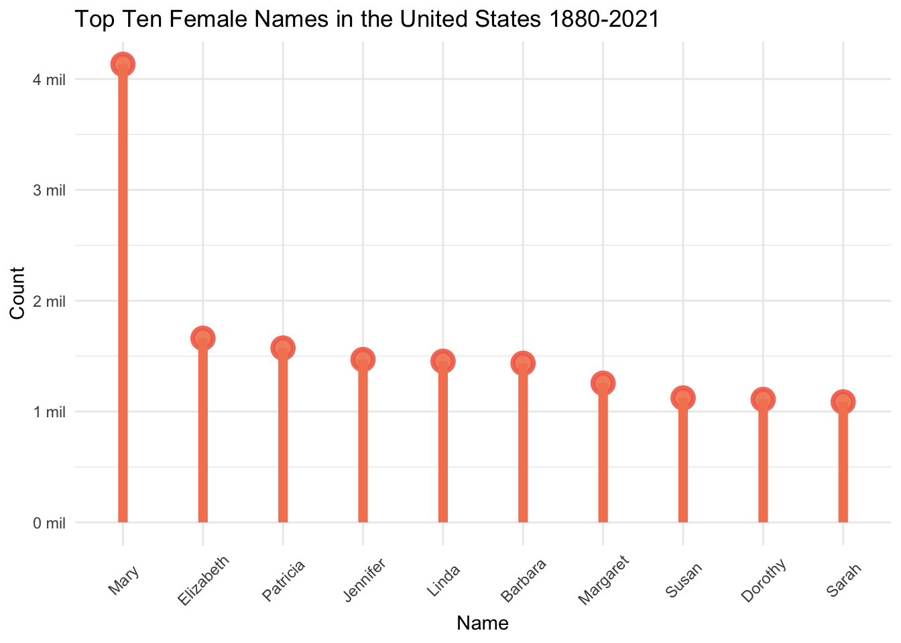
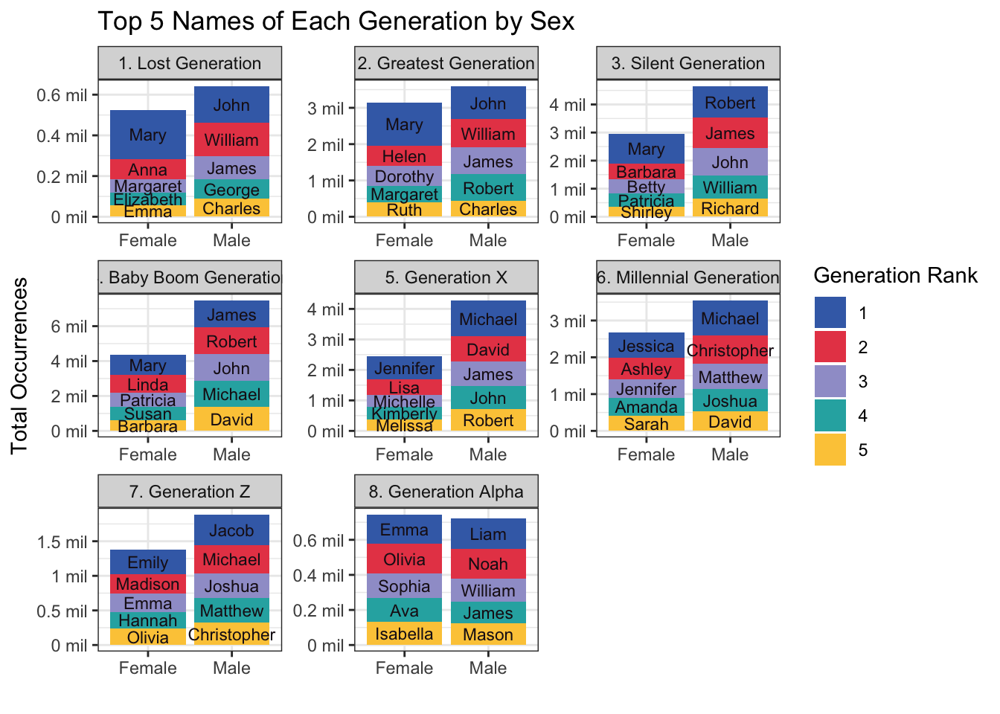
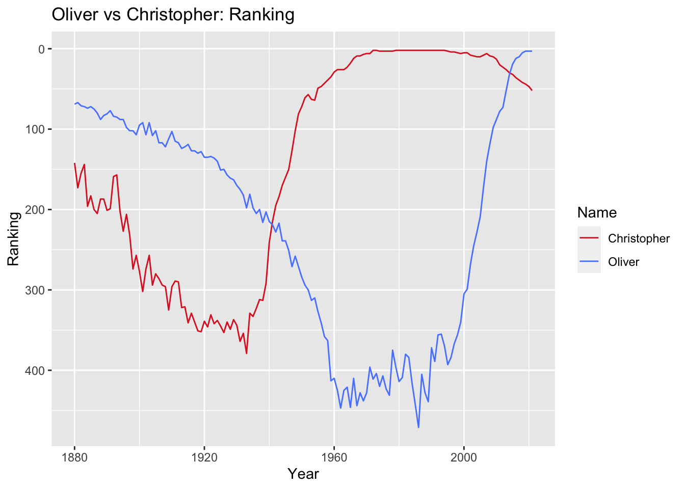

library(tidyverse)
library(knitr)
library(kableExtra)
library(purrr)
library(forcats)
library(ggthemes)
library(plotly)
knitr::opts_chunk$set(echo = TRUE, warning=FALSE, message=FALSE)Final Project: Baby Names
final_project
Justine Shakespeare
Baby Names
Final project submission
Introduction
This analysis will use the data on names given to babies born in the United States from 1880 to 2021 provided by the Social Security Administration, to explore the primary research question: What are the major trends in baby name popularity and how have they changed over time? These data contain information on baby names, sex, year of birth, and number of occurrences of each name in a given year. This research will explore the most popular baby names in the dataset by year and generation, how the proportion of babies with the most popular names has changed over time, and whether baby name popularity is cyclical in nature. Finally, this research will consider if and how the answers to these questions differ by sex.
Background
Compared to decisions regarding sleep, breastfeeding, schools and more, naming your baby may seem like one of the more arbitrary and inconsequential choices a parent makes. But it is a deeply personal decision, laden with expectations, hopes, and even whimsy. Baby names may seem like an innocuous, fluffy data point, but they provide a fascinating window into the cultural trends and societal values of the United States at different points in time.
My interest in baby names and naming trends in the United States is personally motivated. The day we found out I was pregnant back in spring 2020 my husband suggested the name Oliver if we had a boy. I loved it, but found out soon enough that we weren’t the only ones. In 2020, Oliver was the third most popular name given to baby boys in the United States.
I thought back to my childhood in rural Vermont, where four out of the 16 kids in my class in elementary school were named Chris. I did not want my son to be one of four Olivers in a classroom. While we tried to find alternative names, a friend suggested that while Oliver is a popular name now (as Chris was in the mid 1980s) the actual percentage of babies named Oliver is likely less, since the diversity of names has increased in recent times. When I found this baby names data I knew I had to investigate this hypothesis.
In addition to answering this burning question, I will explore other patterns around name popularity, including which names have been the most popular during different time periods, and whether there is a cyclical nature to popularity for some names.
Dataset Introduction
The data I’ll be analyzing was downloaded from the Social Security Administration (SSA) website. It is all of the names in the SSA database, which are drawn from Social Security card applications for babies born in the United States from 1880 until 2021. This analysis goes beyond what is featured on the SSA website, which is limited to just the top 1,000 names for each year and sex. The data that will be used in this analysis includes all names between 1880 and 2021 with some stipulations (see below).
Some additional notes about this data:
The SSA states that before 1937 many people did not apply for a Social Security card, and so their names will not be reflected in the data.
Records that did not include the state of birth, sex, and year of birth are not included in the data.
In order to be included, names had to be at least 2 characters long.
In order to protect the privacy of individuals, the SSA restricts this list to only names with at least 5 occurrences. They state in their accompanying documentation: “If a name has less than 5 occurrences for a year of birth in any state, the sum of the state counts for that year will be less than the national count.”
Because name data are not edited, there may be mistakes in the sex listed and entries such as “Unknown” and “Baby” have not been removed. In fact, there are 591 occurrences of “Baby” and 760 occurrences of “Unknown” listed as baby names in this data. Since these are not actual names, we will remove these during the data cleaning section below.
The SSA did not combine similar names with different spelling. So names Caitlin, Caitlyn, Kaitlin, Kaitlyn, and other version are all listed separately. This should be considered a limitation since it may obscure the true popularity of names that can be spelled in different ways, such as Caitlin.
Load the data
This data was stored in 142 text files (one for each year the data was collected), which is read into R by following several steps. First, I created an list object with all of the text files, then a function that read in the data, provided column names, and added a new variable that tracked the year. Finally, the map_dfr() function was used to apply the new function to the file list object and to bind everything together into one dataset.
# Create filenames object with all babynames text files
filenames <- list.files("~/601_Spring_2023/601_Spring_2023/posts/JustineShakespeare_FinalProjectData/names", pattern="*.txt")
# create function to read in the files and create Year variable with year pulled from filename
read_babynames<-function(path="~/601_Spring_2023/601_Spring_2023/posts/JustineShakespeare_FinalProjectData/names", fn){
read_csv(paste(path, fn, sep="/"),
col_names = c("Name", "Sex", "Occurrences"))%>%
mutate(Year = parse_number(fn))
}
# bind all together while reading it in by passing list of files through the function
BabyNames<- map_dfr(filenames, ~read_babynames(fn=.x))Data Description
Now that the data is loaded, let’s take a closer look.
glimpse(BabyNames)Rows: 2,052,781
Columns: 4
$ Name <chr> "Mary", "Anna", "Emma", "Elizabeth", "Minnie", "Margaret",…
$ Sex <chr> "F", "F", "F", "F", "F", "F", "F", "F", "F", "F", "F", "F"…
$ Occurrences <dbl> 7065, 2604, 2003, 1939, 1746, 1578, 1472, 1414, 1320, 1288…
$ Year <dbl> 1880, 1880, 1880, 1880, 1880, 1880, 1880, 1880, 1880, 1880…Each case in this data represents a name given to a baby and the number of babies with that name in a given year and sex. This data includes all of the names reported to the Social Security Administration (with some exceptions, see notes above), totaling well over 100,000 unique names across 142 years (from 1880 to 2021). Most names are repeated in many years and so the dataset has well over 2 million observations.
We will use all of the variables in this data frame, which are: Name, Year, Sex, and Occurrences. There are no NAs in this data so we do not have to decide how to handle them. While the data is already pretty tidy, there are a few small changes we can make to make this data easier to use. First we’ll recode the values of the Sex variable so that “F” and “M” are spelled out. As noted in the introduction, there are some cases of “Baby” and “Unknown” in this data that are not actual names. We will remove those.
# recode values in the Sex variable
BabyNames <- BabyNames %>%
mutate(Sex = recode(Sex, "F" = "Female", "M" = "Male"))
# remove all instances of "Baby" and "Unknown"
BabyNames <- BabyNames %>%
filter(Name != "Baby" & Name != "Unknown")This brings the total observations in the data from 2,052,781 to 2,052,337.
Now let’s take a closer look at the data. We can use the filter() and n_distinct() functions to see how many unique names there are in the data, by sex and in total.
# find unique number of female names in the data
FemaleNames <- filter(BabyNames, Sex == "Female")
TotFemNames <- n_distinct(FemaleNames$Name)
cat("Total unique female names in the data: ", TotFemNames)Total unique female names in the data: 69525# find unique number of male names in the data
MaleNames <- filter(BabyNames, Sex == "Male")
TotMaleNames <- n_distinct(MaleNames$Name)
cat("Total unique male names in the data: ", TotMaleNames)Total unique male names in the data: 43091# find total unique number of names in the data
cat("Total unique names in the data: ", TotFemNames+TotMaleNames)Total unique names in the data: 112616There are much fewer unique names for males than there are for females in this data. Note this is not counting occurrences of names, but unique names.
Since Occurrences is our numeric variable, let’s take a look at a statistical summary of this data. As a reminder, the Occurrences variable is the number of times a baby is given a specific name in a single year.
# take a look at summary statistics for the Occurrences variable
BabyNames %>%
summarize(Min = min(Occurrences),
Mean = mean(Occurrences),
Median = median(Occurrences),
Max = max(Occurrences))These descriptive statistics show how many times a name was given to a baby by sex in a single year, so the max represents a name that was given to 99,693 babies in a single year for either male or female babies. Without information on the year, it’s hard to get a sense of what these numbers are telling us. I ran this analysis with the Year variable included, so that it provided these statistics for each year in the data. For the purposes of this analysis I’ll include below a version of this table that includes these statistics by decade.
# create a decade variable that allows us to group the data by decade
BabyNames <- BabyNames %>%
mutate(Decade = cut(Year, breaks = seq(1879, 2030, by = 10), labels = format(seq(1880, 2020, by = 10), format = "%Y")))
# look at summary statistics of the Occurrences variables by decade
BabyNames %>%
group_by(Decade) %>%
summarize(Min = min(Occurrences),
Mean = mean(Occurrences),
Median = median(Occurrences),
Max = max(Occurrences))This table shows the minimum, mean, median, and maximum number of occurrences of a name, by sex, and for an individual year averaged across the decade. The minimum makes sense given the note shared by the SSA that stated that no name with fewer than 5 occurrences was included in the data. The mean indicates that the average baby shares their name with that many other babies of the same sex born the same year. It looks as if the time when babies shared their names with the most other children on average was in the 1940s, 50s, and 60s. In all decades the median is much lower than the mean, which indicates that popular names that are given to many children skew the distribution of Occurrences. The median indicates the midpoint, which means that half of the names in the data are given to fewer than 11, 12, or 13 (depending on the year) babies each year. The max indicates the number of occurrences of the most popular name of the year. The specific names that constitute the maximum each year will be explored in more detail in the Analysis section.
Analysis Plan
Research Questions
What are the most popular names in a given year? What are the most popular names in the entire dataset across all years? Finally, what were the most popular names for each generation?
Has there been a change over time in the proportion of babies who are named the most popular names? More specifically, is the name Oliver as popular now in the 2020s as Christopher was in the 1980s?
Is there a cyclical nature to the popularity of some names? Are there some names that were popular in earlier generations that have regained popularity recently?
Additional Variables
The analysis and visualization that I will do for this project will be driven by my research questions. I’ll need to create several additional variables in order to answer the research questions, including:
Sum_Occurrences - this variable will constitute different sums depending on the goal of the analysis at hand and it will enable summing individual name occurrences across years and generations. (research questions 1 and 2).
Total_Year_Occurrences - this variable will sum the total occurrences of all names across a single year. It will be used to create the proportion variable (research question 2).
Generation - this variable will indicate the generation to which each year belongs. It will be used to perform analysis exploring the most popular names in a generation (research question 1).
Generation_Rank - this variable will rank names based on the number of occurrences within a generation. This will be used in the analysis exploring the most popular names in a generation (research question 1).
Year_Rank - this variable will rank names based on the number of occurrences within a year. It will be used in the analysis exploring both the change in proportion of popular names and the cyclical nature of popular names (research questions 2 and 3).
Proportion - this variable is is created by dividing the sum of occurrences for one name in a given year by the total occurrences of all names in the same year. This will be used for analysis exploring how the proportion of popular names has changed over time (research question 2).
Visualizations
Each research question will include a set of data visualizations that illustrate the patterns discovered by this analysis.
Research Question 1: What are the most popular names across a variety of categories (year, all time, generation)?
For this question I will use piping, group_by(), summarize() and other functions to pull the top names in a given year by sex; across all years (from 1880 to 2021) by sex; and in each generation by sex. For the top 10 names across all years I will show the names in two lollipop charts, one for each sex, that visualize each name and their total occurrences throughout the entire dataset. For the analysis of the most popular names in a generation, I will create two new variables identifying which Generation a year falls into and the rank of each name within each generation (Generation_Rank). For this analysis I will create a table and a stacked bar graph that will show the top five names for each sex in each generation.
Research Question 2: Has there been a change over time in the proportion of babies who are named the top ranking names? (specifically, Christopher and Oliver?)
For this question I will use piping, group_by(), summarize(), mutate() and other functions to create two new variables: Year_Rank and Proportion. These new variables will capture the ranking of each name in each year and the proportion of babies that have each name in a given year. I will create a data visualization that charts the top 3 ranked names across time by proportion so that we can see whether the proportion of babies with the top ranked names changes over time. Finally, to answer the specific question regarding Christopher vs Oliver, I’ll create a set of time series graphs that show the the change in popularity of both names according to occurrences, ranking, and proportion over time.
Research Question 3: Is there a cyclical nature to the popularity of some names?
For this question I will select an individual year in the data and use filter(), full_join() and other functions to compare the top 100 baby names of that year with the top 100 baby names from a year exactly 100 years earlier to determine if there are names that fall on both lists. Then I will graph the names that appear on both lists to examine the popularity ranking of those names throughout the intervening years. I’ll perform this analysis with two sets of years in order to determine whether the same trend is observed in two different time periods.
Analysis and Visualizations
This question has three parts:
a. What are the most popular names in a given year, by sex?
b. What are the most popular names across the entire timeframe covered in the data (1880-2021), by sex?
c. What are the most popular names for each generation in the data (as defined by several external sources)
These questions will allow us to get an overview of baby name popularity in the United States and from there we can investigate specific patterns explored in research questions 2 and 3.
Most popular names in a given year
First let’s explore the most popular names in a given year and sex (question 1.a).
# Most popular name in a year, female
PopF_Year <- BabyNames %>%
filter(Sex == "Female") %>%
group_by(Year, Name) %>%
summarize("Sum_Occurrences" = sum(Occurrences)) %>%
arrange(desc(Sum_Occurrences)) %>%
rename("Total Occurrences" = Sum_Occurrences) %>%
head(n = 10)
# format kable table
kable(PopF_Year, format = "html") %>%
kable_styling() %>%
column_spec(2, bold = TRUE) %>%
row_spec(1:10, color = "#F27059") %>%
row_spec(0, bold = TRUE, color = "#EFEFF0",
background = "#F27059") %>%
row_spec(1:10, background = "#FFFCF9")| Year | Name | Total Occurrences |
|---|---|---|
| 1947 | Linda | 99693 |
| 1948 | Linda | 96212 |
| 1949 | Linda | 91019 |
| 1950 | Linda | 80431 |
| 1921 | Mary | 73985 |
| 1951 | Linda | 73977 |
| 1924 | Mary | 73535 |
| 1922 | Mary | 72177 |
| 1947 | Mary | 71684 |
| 1923 | Mary | 71635 |
The year when the most female babies were given the same name was in 1947, when 99,693 babies were named Linda. The next three most popular names in a year were Linda again in the three years that following 1947. Mary makes up most of the second half of the list, primarily in the 1920s. The years here, including the fact that 1947 shows up twice on this short list, likely reflect the high number of babies born during the Baby Boom. Given that there were fewer babies in the 1920s, seeing Mary on this list during that time period reflects the huge popularity of that name. This data also reflects the trend of popular names remaining popular for at least a few years in a row.
# Most popular name in a year, male
PopM_Year <- BabyNames %>%
filter(Sex == "Male") %>%
group_by(Year, Name) %>%
summarize("Sum_Occurrences" = sum(Occurrences)) %>%
arrange(desc(Sum_Occurrences)) %>%
rename("Total Occurrences" = Sum_Occurrences) %>%
head(n = 10)
# format kable table
kable(PopM_Year, format = "html") %>%
kable_styling() %>%
column_spec(2, bold = TRUE) %>%
row_spec(1:10, color = "#2A9D8F") %>%
row_spec(0, bold = TRUE, color = "#EFEFF0",
background = "#2A9D8F") %>%
row_spec(1:10, background = "#FFFCF9")| Year | Name | Total Occurrences |
|---|---|---|
| 1947 | James | 94762 |
| 1957 | Michael | 92723 |
| 1947 | Robert | 91651 |
| 1956 | Michael | 90715 |
| 1958 | Michael | 90574 |
| 1948 | James | 88595 |
| 1954 | Michael | 88570 |
| 1955 | Michael | 88353 |
| 1947 | John | 88321 |
| 1946 | James | 87440 |
Among the male names, James had the highest number of occurrences in 1947. The male list is dominated by the names James, Michael, Robert, and John, primarily from the late 1940s and 1950s. Again, this data reflects the high number of babies during the Baby Boom and the pattern of popular names remaining popular for several years in a row.
Most popular names across all years
Let’s look at the names that have been the most popular in the United States across all years in the data (question 1.b). Starting with female names, we’ll use a lollipop graph that allows us to compare the total occurrences of each name.
# lollipop graph of the most popular female names in the dataset
BabyNames %>%
filter(Sex == "Female") %>%
group_by(Name) %>%
summarize("Sum_Occurrences" = sum(Occurrences)) %>%
arrange(desc(Sum_Occurrences)) %>%
slice(1:10) %>%
ggplot(aes(x = fct_rev(fct_reorder(Name, Sum_Occurrences)), y = Sum_Occurrences)) +
geom_point(size = 4, color = "#F27059",
fill=alpha("#F4845F", 0.7),
alpha = 0.9, shape = 21, stroke=2) +
geom_segment(aes(x=fct_rev(fct_reorder(Name, Sum_Occurrences)), xend=fct_rev(fct_reorder(Name, Sum_Occurrences)), y=0, yend=Sum_Occurrences),
linewidth=2.5, color="#F4845F", linetype="solid") +
labs(title = "Top Ten Female Names in the United States 1880-2021",
x = "Name", y = "Count") +
theme_minimal() +
theme(axis.text.x = element_text(angle = 45, vjust = 0.55)) +
scale_y_continuous(labels = function(x) { paste0(x / 1000000, " mil")})
Mary is the most popular female name, with 4,132,497 baby girls with that name between 1880 and 2021. There are well over more than twice as many female babies with the name Mary than any other female name. The next most popular names are Elizabeth, Patricia, and Jennifer. Even though Linda was in our top ten lists of most occurrences in a year, Linda is only the 5th most popular name of all female baby names. This indicates that while Linda was the most popular during specific moments in time, it did not have the same long-lasting, enduring popularity of the names higher on this list.
# lollipop graph of the most popular male names in the dataset
BabyNames %>%
filter(Sex == "Male") %>%
group_by(Name) %>%
summarize("Sum_Occurrences" = sum(Occurrences)) %>%
arrange(desc(Sum_Occurrences)) %>%
slice(1:10) %>%
ggplot(aes(x = fct_rev(fct_reorder(Name, Sum_Occurrences)), y = Sum_Occurrences)) +
geom_point(size = 4, color = "#228176",
fill=alpha("#2A9D8F", 0.7),
alpha = 0.9, shape = 21, stroke=2) +
geom_segment(aes(x=fct_rev(fct_reorder(Name, Sum_Occurrences)), xend=fct_rev(fct_reorder(Name, Sum_Occurrences)), y=0, yend=Sum_Occurrences),
linewidth=2.5, color="#2A9D8F", linetype="solid") +
labs(title = "Top Ten Male Names in the United States 1880-2021",
x = "Name", y = "Count") +
theme_minimal() +
theme(axis.text.x = element_text(angle = 45, vjust = 0.55)) +
scale_y_continuous(labels = function(x) { paste0(x / 1000000, " mil")})James is the most popular male name, with 5,202,714 baby boys named James from 1880 to 2021. Unlike the list of female names, the top male names all have fairly similar levels of total occurrences. James is followed closely by John, Robert, and Michael.
Most popular names in each generation
Let’s turn to the last part of research question 1 and look at the most popular names of each generation.
First, we’ll create a new Generations variable that indicates in which generation a year falls. The years defining each generation are primarily drawn from the Pew Research Center.1 The earliest generation, the Lost Generation, was not covered in Pew and so was drawn from another source.2 This source defined the Lost Generation as starting in 1883, but for the purposes of this analysis, we will also include babies named in 1880 through 1882 in the Lost Generation so that those years are included in the analysis.
# define the generation variable
BabyNames_gen <- BabyNames %>%
mutate("Generation" = case_when(
Year <= 1900 ~ "1. Lost Generation",
Year >= 1901 & Year <= 1927 ~ "2. Greatest Generation",
Year >= 1928 & Year <= 1945 ~ "3. Silent Generation",
Year >= 1946 & Year <= 1964 ~ "4. Baby Boom Generation",
Year >= 1965 & Year <= 1980 ~ "5. Generation X",
Year >= 1981 & Year <= 1996 ~ "6. Millennial Generation",
Year >= 1997 & Year <= 2012 ~ "7. Generation Z",
Year >= 2013 ~ "8. Generation Alpha"))Now that we have created our Generation variable, let’s take a look at the top five names (of each sex) for each generation.
# find the total number of occurrences for each generation
BabyNames_gen %>%
group_by(Generation) %>%
summarize(sum_by_gen = sum(Occurrences)) %>%
arrange(sum_by_gen)# creating a ranking per generation
Generation_rank <- BabyNames_gen %>%
group_by(Generation, Sex, Name) %>%
summarize(SumGen_Occurrences = sum(Occurrences)) %>%
mutate(Gen_Rank = min_rank(desc(SumGen_Occurrences)))
# in order to create a table that is easy to quickly peruse, we'll do some additional data transformation
# Separating out the female names and pulling the top five per generation
BigTable_F <- Generation_rank %>%
filter(Sex == "Female") %>%
group_by(Sex, Generation) %>%
arrange(Gen_Rank, Generation) %>%
slice(1:5) %>%
select("Generation", "Gen_Rank", "Sex", "Name") %>%
pivot_wider(names_from = "Gen_Rank",
values_from = "Name") %>%
rename("Rank 1" = "1", "Rank 2" = "2", "Rank 3" = "3",
"Rank 4" = "4", "Rank 5" = "5")
# Separating out the male names and pulling the top five per generation
BigTable_M <- Generation_rank %>%
filter(Sex == "Male") %>%
group_by(Sex, Generation) %>%
arrange(Gen_Rank, Generation) %>%
slice(1:5) %>%
select("Generation", "Gen_Rank", "Sex", "Name") %>%
pivot_wider(names_from = "Gen_Rank",
values_from = "Name") %>%
rename("Rank 1" = "1", "Rank 2" = "2", "Rank 3" = "3",
"Rank 4" = "4", "Rank 5" = "5")
# joining the female and male top five names per generation tables
BigTable <- bind_rows(BigTable_F, BigTable_M)
BigTable <- arrange(BigTable, Generation)
# final table with design
kable(BigTable, format = "html") %>%
kable_styling() %>%
row_spec(0, bold = TRUE, color = "#EFEFF0",
background = "#4357AD") %>%
row_spec(1, color = "#F27059", background = "#FFFCF9") %>%
row_spec(2, color = "#2A9D8F", background = "#FFFCF9") %>%
row_spec(3, color = "#F27059", background = "#EFEFF0") %>%
row_spec(4, color = "#2A9D8F", background = "#EFEFF0") %>%
row_spec(5, color = "#F27059", background = "#FFFCF9") %>%
row_spec(6, color = "#2A9D8F", background = "#FFFCF9") %>%
row_spec(7, color = "#F27059", background = "#EFEFF0") %>%
row_spec(8, color = "#2A9D8F", background = "#EFEFF0") %>%
row_spec(9, color = "#F27059", background = "#FFFCF9") %>%
row_spec(10, color = "#2A9D8F", background = "#FFFCF9") %>%
row_spec(11, color = "#F27059", background = "#EFEFF0") %>%
row_spec(12, color = "#2A9D8F", background = "#EFEFF0") %>%
row_spec(13, color = "#F27059", background = "#FFFCF9") %>%
row_spec(14, color = "#2A9D8F", background = "#FFFCF9") %>%
row_spec(15, color = "#F27059", background = "#EFEFF0") %>%
row_spec(16, color = "#2A9D8F", background = "#EFEFF0") %>%
column_spec(1, color = "#4357AD", bold = TRUE)| Generation | Sex | Rank 1 | Rank 2 | Rank 3 | Rank 4 | Rank 5 |
|---|---|---|---|---|---|---|
| 1. Lost Generation | Female | Mary | Anna | Margaret | Elizabeth | Emma |
| 1. Lost Generation | Male | John | William | James | George | Charles |
| 2. Greatest Generation | Female | Mary | Helen | Dorothy | Margaret | Ruth |
| 2. Greatest Generation | Male | John | William | James | Robert | Charles |
| 3. Silent Generation | Female | Mary | Barbara | Betty | Patricia | Shirley |
| 3. Silent Generation | Male | Robert | James | John | William | Richard |
| 4. Baby Boom Generation | Female | Mary | Linda | Patricia | Susan | Barbara |
| 4. Baby Boom Generation | Male | James | Robert | John | Michael | David |
| 5. Generation X | Female | Jennifer | Lisa | Michelle | Kimberly | Melissa |
| 5. Generation X | Male | Michael | David | James | John | Robert |
| 6. Millennial Generation | Female | Jessica | Ashley | Jennifer | Amanda | Sarah |
| 6. Millennial Generation | Male | Michael | Christopher | Matthew | Joshua | David |
| 7. Generation Z | Female | Emily | Madison | Emma | Hannah | Olivia |
| 7. Generation Z | Male | Jacob | Michael | Joshua | Matthew | Christopher |
| 8. Generation Alpha | Female | Emma | Olivia | Sophia | Ava | Isabella |
| 8. Generation Alpha | Male | Liam | Noah | William | James | Mason |
This table highlights some interest patterns among popular names over the past 142 years. It shows that males names are much more concentrated, with James and Jon dominating the top five boys names for the first five generations - a span of 100 years. William is in the top five for the first three generations (only to reappear in the most recent generation Alpha), and Robert appears in five consecutive generations, from the Silent Generation to Generation X. Even when things begin to shift with the Millennial Generation (the first generation without John, James, Robert, or William in the top five) there is still overlap with the previous generation (Michael and David appear in both). Almost all generations have at least two male names on their list that overlap with the top five names of the previous generation. Only Generation Alpha bucks this trend with a list of top five names that have no overlap with the previous generation. Interestingly, while all of the top five names of Generation Alpha are different from Generation Z, we see the re-emergence of James and William, which both dominated the top five names in earlier generations.
This trend of the concentration of popular names is not as prominent among the names given to female babies. Of the 30 female names that appear in the top 5 for each generation, only Mary and Emma appear in more than two generations (Mary appears four times, Emma three times). Only five additional names, Barbara, Patricia, Jennifer, Margaret, and Olivia, appear in even two generations. The rest of the names only show up in the top 5 names of just one generation. In fact, for both Generation X and Generation Z, the top five names are entirely different from the generation preceding them.
The trends that we see here - the concentration of male names, the long lasting popularity of male names, and the variability within female names - will be further explored in research questions 2 and 3.
Data visualization of the top ranked names in each generation
The following bar graphs show the top 5 male and female names for each generation. The height of the columns represents the sum of occurrences of all five names, the different colors show the distinction between each name.
# set color vector
color_v1 <- c("#406DB5", "#E84855", "#A09FD0", "#28AFB0", "#FCCA46")
# visualization with top names in each generation, comparing occurrences by sex
Generation_rank %>%
group_by(Generation, Sex) %>%
arrange(Gen_Rank, Generation) %>%
slice(1:5) %>%
ggplot(aes(x = Sex, y = SumGen_Occurrences, fill = as.factor(Gen_Rank), position="dodge")) +
geom_col() + facet_wrap(~ Generation, scales="free") +
scale_y_continuous(labels = function(x) { paste0(x / 1000000, " mil")}) +
scale_fill_manual(values = color_v1) +
geom_text(aes(label = Name), size = 3, color = "#1C1018", position = position_stack(vjust = 0.5)) +
labs(title = "Top 5 Names of Each Generation by Sex",
x = "", y = "Total Occurrences",
fill = "Generation Rank") +
theme_bw()
This visual provides a graphic representation of the most popular names of each generation and the number of babies with those names. Note that the scales here, specifically the y-axis, are set to free, and so they vary depending on the values of the data within each plot. We should be careful about drawing conclusions from this visual, since generations are not standard in their length or in the population size they represent. Still, these bar graphs hint at some of the trends we will explore in the next two research questions with a more systematic approach.
Despite the fact that the population of the United States has grown throughout the years, this data shows that the number of babies with the most popular names has decreased over time. This suggests that popular names were given to more babies in earlier generations than in more recent ones. Research question 2 will investigate this trend in the data.
This visualization also hints at whether name popularity follows a consistent or cyclical pattern. As noted above, there are many names (especially male names), that remain in the top five across several generations, reflecting a consistent popularity over the years. In addition, some names drop out of the top five (such as Emma for female names and William for male names) and reappear much later generations. The reappearance of “vintage baby names” will be explored further in research question 3.
A final noticeable takeaway from this visualization is the difference between sexes. In almost all generations there are more occurrences of the most popular male names, suggesting that there is a higher concentration of males with the same popular name when compared with females. The way in which trends manifest differently by sex will be discussed in both research questions 2 and 3.
This question has two parts:
a. Has there been a change over time in the proportion of babies who are named the most popular names?
b. Specifically, is the name Oliver as popular now in the 2020s, as Christopher was in the 1980s?
In an article in the Atlantic, Philip Cohen notes the decline of the popularity of the name Mary and other traditional names in recent years.3 He explains “the modernization theory of name trends,” which essentially states that individualism is playing an increasingly large role in name preferences. I suspect that one way in which this individualism has manifested is that fewer babies are named the same name - in other words, the proportion of babies with popular names has decreased. Let’s see if the data supports this hypothesis.
In order to explore this research question, I will create two additional variables. The first will represent the rank of a name in a given year and sex and will be called Year_Rank. The second variable will represent the proportion of babies that have each name in a given year and sex and will be called Proportion.
The Year_Rank variable is created by using the group_by(), summarize(), mutate(), and min_rank() functions.
# Creates two new variables, Sum_Occurrences and Year_Rank.
BabyNames_rank <- BabyNames %>%
group_by(Year, Sex, Name) %>%
summarize("Sum_Occurrences" = sum(Occurrences)) %>%
mutate(Year_Rank = min_rank(desc(Sum_Occurrences)))The Proportion variable is created using the group_by(), mutate() and sum() functions and dividing the total occurrences of a name in a given year by the total occurrences of all names in that year.
# create the Proportion variable
BabyNames_prop <- BabyNames_rank %>%
group_by(Year, Sex) %>%
mutate(Year_Total_Occurrences = sum(Sum_Occurrences)) %>%
mutate(Proportion = Sum_Occurrences/Year_Total_Occurrences)Data visualization of the top ranked names
This graph shows the top three ranked names in a year, and the proportion of babies with that name. Note that each line does not represent a specific name, but rather one of the top three ranked names for the given year.
color_prop <- c("#F0544F", "goldenrod1", "cornflowerblue")
BabyNames_prop %>%
filter(Year_Rank <= 3) %>%
ggplot(aes(Year, Proportion, group = as.factor(Year_Rank),
colour = as.factor(Year_Rank))) +
geom_line() +
scale_color_manual(values = color_prop) +
geom_smooth(linetype = "11", se = FALSE, alpha = 0.7, size = .75) +
labs(title = "Proportion of Top Three Names Each Year, by Sex",
subtitle = "The proportion of babies with popular names decreases as time goes on, although this trend
is much stronger among male names than female ones",
color = "Name Rank") +
facet_wrap(~ Sex)
This graph clearly depicts a major decrease in the proportion of babies with the most popular male names. Whereas in the late 19th century more than eight percent of boys were named the most popular name of the time, by the early 21st century around one percent of boys are named the highest ranked name.
For female names the trend has not been as strong. The first-ranked name follows a pattern similar to the male names, with a major decrease in the proportion of female babies over time. But the second and third most popular female names actually increased in proportion slightly from the late 19th century to the mid 20th century, before declining again. It is noteworthy that the change in proportion of babies with the second and third most popular female names has shifted from four and three percent, respectively, to closer to one percent, which is a much more gradual change than we see with male names. This is in keeping with the visual at the end of research question 1, which showed that popular female baby names are given to fewer babies than popular male names in most generations.
These graphs indicate that in more recent years, fewer babies are given the most popular names. Since by definition the most popular names are the names given to the most babies, this indicates that in recent years fewer babies share the same name, and so there are a larger number of unique names overall. We can confirm this with the data.
# Bar graph of number of distinct names by generation
BabyNames_gen %>%
group_by(Generation, Sex) %>%
summarize("Unique_Names" = n_distinct(Name)) %>%
ggplot(aes(x = Generation, y = Unique_Names, fill = Sex)) +
geom_col(position = "dodge") +
scale_fill_manual(values = c("#F27059", "#2A9D8F")) +
theme_minimal() +
labs(title = "Number of Unique Names in Each Generation, by Sex",
y = "Number of Unique Names") +
theme(axis.text.x = element_text(angle = 60, vjust = 0.55)) +
scale_y_continuous(labels = function(x) { paste0(x / 1000, "k")})
This bar graph shows that the number of unique names has increased with each generation. While Generation Alpha has slightly fewer unique names than the preceding generation, it is also an “incomplete” generation, in that it includes babies born today and has not ended yet.
This bar graph also shows a crucial difference by sex: there are consistently more unique female names than male names. This makes sense given the proportion of babies with popular names - since more male babies are given popular names, there are fewer opportunities for different ones. Likewise, since fewer female babies are named popular names, there are more chances for different names.
These graphs all show a trend of increasing name variety correlating with decreasing proportions of babies with the most popular names.
Oliver vs Christopher: How has the relationship between popularity and proportion changed in recent years?
In order to answer the second part of my research question, let’s look specifically at the popularity of the male names Christopher and Oliver. We’ll explore how the number of occurrences, proportion, and ranking of these names change over time. Note that Chris and Christopher are tracked separately in the baby names data, but Christopher has significantly more occurrences on average during the time period we’re interested in.
# compares the average occurrences of the names Chris and Christoper in the 1980s
BabyNames_prop %>%
filter(Sex == "Male") %>%
group_by(Name) %>%
filter(Year >1980 & Year < 1989) %>%
filter(Name == "Christopher" | Name == "Chris") %>%
summarize(Avg_Occur = mean(Sum_Occurrences))So for ease of analysis, we’ll just look at Christopher. First let’s compare how Christopher and Oliver have changed in popularity over time, according to the Year_Rank variable.
# graph the ranking of names Oliver and Christopher over time
OliChri_Rank <- BabyNames_prop %>%
filter(Sex == "Male") %>%
filter(Name %in% c("Oliver", "Christopher")) %>%
ggplot(aes(Year, Year_Rank, group = as.factor(Name),
colour = as.factor(Name))) +
geom_line() +
scale_y_reverse() +
scale_color_manual(values = c("#DB272A", "#5887FF")) +
labs(title = "Oliver vs Christopher: Ranking",
color = "Name",
y = "Ranking")
OliChri_Rank
We can see here that Christopher enjoyed a long streak of popularity from the 1970s until recently. During that time (1970 to 2000), Christopher ranked an average 2.7 of all baby male names in the data.
# shows the average ranking of the name Christopher from 1970 to 2000
BabyNames_prop %>%
filter(Sex == "Male") %>%
group_by(Name) %>%
filter(Year >1970 & Year < 2000) %>%
filter(Name == "Christopher") %>%
summarize(Avg_Rank = mean(Year_Rank))The arc of Oliver’s popularity looks quite different. Before the 2000s, Oliver’s peak popularity was when the data was first recorded in 1880. Oliver’s trajectory exemplifies the cyclical nature of popularity that we’ll explore further in research question 3. It’s not until well into the 2000s that Oliver breaks the top 100 and climbs to the third most popular male name in 2021.
While Oliver’s popularity is recent, its ranking is similar to Christopher’s in the 1980s. However, we’ve established that the proportion and occurrences of popular names in general has decreased in recent years. Does this trend remain true when comparing the current Oliver and that of Christopher in the 1980s?
Let’s compare the proportion of babies that were given the name Oliver and Christopher over time.
# graph the proportion of babies named Oliver and Christopher over time
OliChri_Prop <- BabyNames_prop %>%
filter(Sex == "Male") %>%
filter(Name %in% c("Oliver", "Christopher")) %>%
ggplot(aes(Year, Proportion, group = as.factor(Name),
colour = as.factor(Name))) +
geom_line() +
scale_color_manual(values = c("#DB272A", "#5887FF", "#00A8E8")) +
labs(title = "Oliver vs Christopher: Proportion",
subtitle = "The proportion of babies given this name in a given year.",
color = "Name",
y = "Proportion")
OliChri_PropIn the early 1980s over 3.5% of baby boys were given the name Christopher, while in 2021 just under 1% of boys were named Oliver, even though both names had the same popularity rank in their time. This difference in proportion would imply that Oliver is much less prevalent now than Christopher was in the 1980s, but this doesn’t account for population growth. Does this obscure the true magnitude of babies named Oliver in 2021?
To answer this question, let’s compare the total occurrences of each name over time.
# graph the annual occurrences of names Oliver and Christopher over time
OliChri_Occur <- BabyNames_prop %>%
filter(Sex == "Male") %>%
filter(Name %in% c("Oliver", "Christopher")) %>%
ggplot(aes(Year, Sum_Occurrences, group = as.factor(Name),
colour = as.factor(Name))) +
geom_line() +
scale_color_manual(values = c("#DB272A", "#5887FF", "#00A8E8")) +
labs(title = "Oliver vs Christopher: Occurrences",
subtitle = "The total number of babies in the United States given this name in a given year.",
color = "Name",
y = "Occurrences")
OliChri_OccurThis graph looks very similar to the previous graph and indicates that at peak popularity in 1984 there were just over 60,000 baby boys named Christopher. In the peak of Oliver’s popularity in 2021 under 15,000 boys were named Oliver, less than a quarter of the boys named Christopher in 1984. Of course it’s possible that Oliver’s popularity will continue to climb, but even if it was the ranked the most popular boys name in the United States, the number one name for 2021, Liam, was given to approximately 20,500 boys, still roughly one third of the number of boys with the name Christopher during its peak.
These graphs show that even though Christopher and Oliver has the same popularity ranking during their peak (1980s and 2021, respectively), there were significantly fewer baby boys named Oliver in 2021 than there were named Christopher in the 1980s. This reflects the trend seen in earlier of decreasing concentration of babies with popular names, which is especially strong among male names.
This is also good news for me, because my baby was born over two years ago now, and we did in fact name him Oliver.
Is there a cyclical nature to the popularity of some names? Are there some names that were popular in the early part of the 20th century that have regained popularity?
According to the baby name website, Nameberry, the “100 Year Rule” states that baby names cycle into popularity roughly every 100 years.4 Anecdotally, I have witnessed this trend of “vintage baby names” - I know several tiny “Roses”, “Lillians”, and “Margarets”. But is this theory supported by the data?
In order to determine if there is truly a cyclical nature to baby name popularity, one would have to analyze a representative sample of this data, if not all of it, and utilize some sort of statistical model that proves the existence of such a pattern. Since this more rigorous method is beyond the scope of this analysis, we’ll instead take a more narrow approach that allows us to confirm if vintage baby names are coming back into fashion and whether this is true for earlier generations as well.
To explore this research question, I isolated the data of two sets of two years, 100 years apart.5 The first set will examine the top names in both 1920 and 2020, and the second set will compare top names in 1885 and 1985. I compared the top 100 names in each of the two years and filtered the data to keep only names that appeared on both lists. I then graphed those names on a time series chart to visualize their popularity journey throughout the intervening years.
Female baby names
# 1885 - 1985
# Use the Year_Rank variable created earlier to limit the data to just the top 100 names in each year.
Top1885 <- BabyNames_prop %>%
filter(Year == 1885) %>%
filter(Year_Rank <=100)
Top1985 <- BabyNames_prop %>%
filter(Year == 1985) %>%
filter(Year_Rank <=100)
# Join two datasets
BabyNames_Cyclical85 <- full_join(Top1885, Top1985, by = "Name")
# Filter only names appearing in top 100 of both years
PopCyclical85 <- BabyNames_Cyclical85 %>%
filter(Year.x == 1885 & Year.y == 1985) %>%
mutate(CombinedRank = Year_Rank.x + Year_Rank.y) %>%
arrange(CombinedRank) %>%
group_by(Sex.x)
# Clean up this table and rename some of the variables so it's nicer to look at
PopCyclical85_Table <- PopCyclical85 %>%
select(-Sex.y, -Year.x, -Year.y, -Year_Total_Occurrences.x, -Year_Total_Occurrences.y,
-Proportion.y, -Proportion.x) %>%
setNames(c("Sex", "Name", "1885 Occurrences",
"1885 Rank", "1985 Occurrences", "1985 Rank",
"Combined Rank"))
# create a color palette for all visualizations for this research question
color_v2 <- c("#DB272A", "#44AF69", "#8390FA", "#669BBC",
"lightsalmon", "#00A8E8", "#F26419", "#5887FF",
"#E9C46A", "darkorchid", "darkslateblue",
"cadetblue", "#F58F00", "cadetblue1", "#F694C1",
"darkblue", "#813405", "#1DD3B0", "indianred1",
"darkolivegreen1")
# plot female name popularity change over time for names popular in 1885 and 1985.
F_85_Plotly <- BabyNames_prop %>%
filter(Sex == "Female") %>%
filter(Name %in% c("Elizabeth", "Anna", "Sarah", "Mary", "Laura",
"Katherine", "Emily", "Catherine", "Julia", "Katie",
"Kathryn", "Amanda", "Margaret", "Carrie", "Rebecca")) %>%
ggplot(aes(Year, Year_Rank, group = as.factor(Name),
colour = as.factor(Name))) +
geom_line() +
geom_vline(xintercept = c(1885, 1985), linetype = "dotted", alpha = 0.5) +
scale_y_reverse(limits=c(1350,0)) +
scale_color_manual(values = color_v2) +
labs(title = "Cyclical Popularity: 1885 and 1985",
subtitle = "These names were popular for female babies born in 1885 and 1985.",
color = "Name",
y = "Ranking",
caption = "Source: https://www.ssa.gov/oact/babynames/") +
theme_bw()
# use plotly to show an interactive version of the graph
ggplotly(F_85_Plotly) %>%
layout(title = list(text = paste0("Names Popular in Both 1885 and 1985 for Female Babies",
'<br>',
'<sup>',
'The dotted gray lines indicate the key years - 1885 and 1985 (Hover over lines to see names)','</sup>')))This graph shows the 15 female names that were popular (defined as being within the top 100 names given to babies born that year) in both 1885 and in 1985. It shows the ranking of these names for each year in the data, reflecting their changing popularity over time.
Many of the names in this graph maintain a consistently high ranking in the years in between 1885 and 1985. Only Emily, Amanda, and Katie drop out of the top 250 rankings in the intervening years, and no names drop out of the top 500 names. Most of the names remain in the top 150 names across all years, reflecting a pattern of consistent, rather than cyclical popularity.
Interestingly, many of the names look to have dropped more quickly out of the high rankings after 1985, led by the precipitous fall of the name Carrie (perhaps influenced by the 1976 horror film of the same name).
Let’s take a look at the most popular names that were given to female babies in both 1920 and 2020.
# 1920 - 2020
# Use the Year_Rank variable I created earlier to limit the data to just the top 100 names in each year.
Top1920 <- BabyNames_prop %>%
filter(Year == 1920) %>%
filter(Year_Rank <=100)
Top2020 <- BabyNames_prop %>%
filter(Year == 2020) %>%
filter(Year_Rank <=100)
# Join two datasets
BabyNames_Cyclical20 <- full_join(Top1920, Top2020, by = "Name")
# Filter only names appearing in top 100 of both years
PopCyclical20 <- BabyNames_Cyclical20 %>%
filter(Year.x == 1920 & Year.y == 2020) %>%
mutate(CombinedRank = Year_Rank.x + Year_Rank.y) %>%
arrange(CombinedRank) %>%
group_by(Sex.x)
# Clean up this table and rename some of the variables so it's nicer to look at
PopCyclical20_Table <- PopCyclical20 %>%
select(-Sex.y, -Year.x, -Year.y, -Year_Total_Occurrences.x, -Year_Total_Occurrences.y,
-Proportion.y, -Proportion.x) %>%
setNames(c("Sex", "Name", "1920 Occurrences",
"1920 Rank", "2020 Occurrences", "2020 Rank",
"Combined Rank"))
# plot female name popularity change over time for names popular in 1920 and 2020
F_20_Plotly <- BabyNames_prop %>%
filter(Sex == "Female") %>%
filter(Name %in% c("Elizabeth", "Anna", "Sarah", "Evelyn", "Charlotte",
"Eleanor", "Emma", "Lillian", "Alice", "Hazel",
"Grace", "Ruby", "Ella", "Stella", "Violet",
"Eva", "Lucy", "Josephine")) %>%
ggplot(aes(Year, Year_Rank, group = as.factor(Name),
colour = as.factor(Name))) +
geom_line() +
geom_vline(xintercept = c(1920, 2020), linetype = "dotted", alpha = 0.5) +
scale_y_reverse(limits=c(1350,0)) +
scale_color_manual(values = color_v2) +
labs(title = "Cyclical Popularity: 1920 and 2020",
subtitle = "These names were popular for female babies born in 1920 and 2020.",
color = "Name",
y = "Ranking")
# use plotly to show an interactive version of the graph
ggplotly(F_20_Plotly) %>%
layout(title = list(text = paste0("Names Popular in Both 1920 and 2020 for Female Babies",
'<br>',
'<sup>',
'The dotted gray lines indicate the key years - 1920 and 2020 (Hover over lines to see names)','</sup>')))This looks markedly different than the previous graph with data from 35 years earlier. There is a much more dramatic drop in popularity among most of the names captured in this graph. Most of the names here, except for Elizabeth, Sarah, and Anna, dropped below the top 250 at some point between 1920 and 2020. Four names, Hazel, Ella, Stella, and Violet, even dropped out of the top 1,000 names during that time period.
Finally, let’s take a look at the same years for male baby names.
Male baby names
# larger color vector for 1885/1985 male names graph
color_v3 <- c("#DB272A", "#44AF69", "#8390FA", "#669BBC",
"lightsalmon", "#00A8E8", "#F26419", "#5887FF",
"#E9C46A", "darkorchid", "darkslateblue",
"cadetblue", "#F58F00", "cadetblue1", "#F694C1",
"darkblue", "#813405", "#1DD3B0", "indianred1",
"darkolivegreen1", "salmon", "cornflowerblue",
"orange", "red", "black", "blue", "green", "purple",
"yellow", "maroon")
# 1885 - 1985
# plot male name popularity change over time for names popular in 1885 and 1985
M_85_Plotly <- BabyNames_prop %>%
filter(Sex == "Male") %>%
filter(Name %in% c("James", "John", "Joseph", "Robert", "William",
"David", "Thomas", "Daniel", "Charles", "Andrew",
"Michael", "Richard", "Benjamin", "Edward", "Samuel",
"George", "Jesse", "Paul", "Jacob", "Peter",
"Frank", "Patrick", "Anthony", "Alexander", "Stephen",
"Raymond", "Alex", "Philip", "Victor")) %>%
ggplot(aes(Year, Year_Rank, group = as.factor(Name),
colour = as.factor(Name))) +
geom_line() +
geom_vline(xintercept = c(1885, 1985), linetype = "dotted", alpha = 0.5) +
scale_y_reverse(limits=c(675,0)) +
scale_color_manual(values = color_v3) +
labs(title = "Cyclical Popularity: 1885 and 1985",
subtitle = "These names were popular for male babies born in 1885 and 1985.",
color = "Name",
y = "Ranking",
caption = "Source: https://www.ssa.gov/oact/babynames/")
# use plotly to show an interactive version of the graph
ggplotly(M_85_Plotly) %>%
layout(title = list(text = paste0("Names Popular in Both 1885 and 1985 for Male Babies",
'<br>',
'<sup>',
'The dotted gray lines indicate the key years - 1885 and 1985 (Hover over lines to see names)','</sup>')))# 1920 - 2020
# plot male name popularity change over time for names popular in 1920 and 2020
M_20_Plotly <- BabyNames_prop %>%
filter(Sex == "Male") %>%
filter(Name %in% c("William", "James", "Henry", "John", "Joseph", "Jack",
"Charles", "David", "Thomas", "Michael", "Daniel", "Samuel",
"Robert", "Anthony", "Leo", "Theodore", "Benjamin", "Andrew",
"Everett")) %>%
ggplot(aes(Year, Year_Rank, group = as.factor(Name),
colour = as.factor(Name))) +
geom_line() +
geom_vline(xintercept = c(1920, 2020), linetype = "dotted", alpha = 0.5) +
scale_y_reverse(limits=c(675,0)) +
scale_color_manual(values = color_v2) +
labs(title = "Cyclical Popularity: 1920 and 2020",
subtitle = "These names were popular for males babies born in 1920 and 2020.",
color = "Name",
y = "Ranking",
caption = "Source: https://www.ssa.gov/oact/babynames/")
# use plotly to show an interactive version of the graph
ggplotly(M_20_Plotly) %>%
layout(title = list(text = paste0("Names Popular in Both 1920 and 2020 for Male Babies",
'<br>',
'<sup>',
'The dotted gray lines indicate the key years - 1920 and 2020 (Hover over lines to see names)','</sup>')))Compared to the female names, both of these graphs show much less variation in popularity ranking over time. Note that the y-axes are half what they are on the graphs with female names, reflecting the fact that none of the male names that were popular in both 1885 and 1985 and in both 1920 and 2020 dropped very far in popularity in the intervening periods. In fact the only names to drop out of the top 200 are Jacob, Alex, and Alexander in the 1885/1985 set, and Everett, Leo, and Theodore, in the 1920/2020 set.
It is also worth noting that in both the 1885/1985 and 1920/2020 sets, there were more male names that were popular in the two years of each set than there were female names. There were 29 male names popular in both 1885 and 1985, as opposed to 15 female names, and 19 male names popular in both 1920 and 2020, as opposed to 18 female names.
This analysis shows that for male names in both sets and female names in the 1885/1985 set, we see a more consistent popularity over the time period studied (with some exceptions), as opposed to the cyclical pattern among most of the female names in the 1920/2020 set. Given the fact that three out of the four sets examined do not show a pattern of cyclical popularity, our hypothesis that baby names cycle into popularity every 100 years is not strongly supported. Then what could explain the pattern we see among female names in 1920 and 2020?
The Atlantic’s Megan Garber describes what she calls the “Paradox of Baby Names,” in which parents’ efforts to give their child an original and uncommon name results in unconventional names topping the annual popularity lists.6 As Garber puts it, “the names parents selected, presumably, at least in part for their uniqueness became, in short order, the opposite of unique.” Garber states that parents “look to lists like the SSA’s not for ideas for names, but for ideas for names to avoid.” I suspect this is the reason we see vintage baby names, such as Violet and Hazel, reappearing on the list of top female names in 2020. Parents are reaching back in history, beyond the names they consider popular, to names that they think of as unique and uncommon.
This theory would explain why babies born in the 1980’s had names that were more consistently popular, since the preference for individuality is a more recent trend. This would also help to explain why we see some of the names from the 1885/1985 set dropping out of popularity toward the beginning of the 21st century. By definition, their long run of popularity makes them much less attractive to the parents of the 21st century looking for unique and uncommon names for their children.
Discussion and Limitations
Incomplete Data: A boy named sue
Many of the limitations of the data were described in the notes provided by the Social Security Administration and detailed in the Data Introduction section above. These notes stated that before 1937 many people did not apply for a Social Security card, and so their data would be missing. Any records that were not complete are also not included in this data. It was also noted that this data is not edited, and some errors may be present. While the errors described, such as names recorded as “Baby” and “Unknown”, were removed from this data as part of the data cleaning process, there are undoubtedly more mistakes and it is not possible to account for and correct all of them. For instance, while working on this analysis I noted that there are many instances of names being recorded the wrong sex. While it’s quite possible that some parents were creative with their name choice and certainly gender neutral names have increased in recent years, it’s unlikely that those reasons account for all 15,172 cases of boys named Mary, or the 519 boys in this dataset named Sue. On a related note, because the data did not track gender neutral names, it was not possible to explore changes in gendered names in this analysis.
The Social Security Administration also specifies that names must be at least two characters long and that there must be at least five occurrences of a name in a state in order to make it on the list, likely meaning that many names were not included. Given all of these issues, the dataset should be understood to not be entirely complete, and so any understanding of the analysis must be considered in this context.
Another limitation of the data that may have affected the analysis is the fact that names with different spellings were recorded as separate names, so the popularity of a name with a variety of spellings may have been obscured. This was particularly notable in research question 3, when this analysis showed that out of the 15 female names that were popular in both 1885 and 1985, three of them were variations on Katherine (or Catherine, or Kathryn) and one was Katie. The prominence of these names suggests that if there was a singular spelling this name would have emerged as one of the most popular names during that time, and not what we saw in research question 1, that Katherine (or any variation) never cracked the top five names of a generation. Further research could seek to combine the occurrences of the names with spelling variations so that their popularity was more accurately captured.
Sex Ratio Discrepancy
While conducting this analysis, I noticed that there was an especially large difference between the number of female and male baby name occurrences for each year. Since the occurrences count the total number of babies named and not the total number of distinct names, any difference between the sexes should reflect the real life sex ratio of babies born in the United States. In order to investigate this further, I calculated the sex ratio per generation to get a sense of the overall discrepancy between the sexes in the data.
# create an average sex ratio variable and show per generation
BabyNames_gen %>%
group_by(Year, Sex, Generation) %>%
summarize(Sum_Occurrences = sum(Occurrences)) %>%
pivot_wider(names_from = Sex, values_from = Sum_Occurrences) %>%
mutate(Sex_Ratio = Male/Female) %>%
group_by(Generation) %>%
summarize("Average Sex Ratio" = mean(Sex_Ratio))This table shows that there are more occurrences of female babies for the first three generations (1880-1945), and there are more male babies in the last five generations (1946-2021). According to several sources, there is in fact a sex discrepancy at birth: approximately 105 male births occurring for every 100 female births.7 This suggests that the sex ratio in this data is actually fairly close to the truth - there are more boys born every year than girls. It’s possible that other limitations of the data affect one sex more than the other, which could account for the remaining discrepancy between the real sex ratio and the sex ratio found in the data. For instance, since this analysis found that there are more unique female names and fewer female babies share the same name (compared to male babies), it’s possible that the policy of leaving out names when there were fewer than five per state, disproportionately excluded more female babies. In addition, since the Social Security Administration specifically stated that data before 1937 was incomplete, it is likely that this plays a significant role in the uneven sex ratio during those years.
Conclusion
The research questions explored in this analysis provide a compelling portrait of the most popular baby names in the United States, the trends that have shaped baby name choices made by American parents, and how this has evolved from the late 19th to the early 21st century.
Two prevailing trends were established and explored in the data:
Diversity in baby names has increased, while the proportion of babies with the same name has decreased. At the start of the time period covered in this data, there were fewer unique names and more babies had the same name. As time went on, there were more unique names, and each name was given to fewer babies. There are many demographic and cultural shifts that have likely played a role in this trend, including increasing ethnic and cultural diversity in the United States, but it has also likely been driven by a shift away from tradition and toward individualism. As the Atlantic’s Philip Cohen states, “Conformity to tradition has been replaced by conformity to individuality.”8
Relatedly, while this analysis shows that some names that were popular 100 years ago are now coming back into fashion, this may be evidence of the trend toward individualism rather than a sign of a larger cyclical pattern. This “vintage baby names” trend is stronger among female names in recent years, as female names from earlier generations and male names from both time periods tend to be more consistently popular over time and rarely drop out of the most popular names.
Naming trends vary by sex. There is a higher concentration of babies with popular male names over all time periods, except for the most recent generation when it is roughly equal with female names. As with male names, the most popular female names are given to fewer babies now than in previous generations, but since female names have started out with more variation the change over time was less dramatic. Male names tended to be more consistently popular over time than female names, while the “vintage baby names” trend, where popular names dropped out of popularity and resurfaced a century later, was much more prevalent among female names.
Finally, on a personal note, these findings mean that I am not alone in my generation in wanting a unique name for my child. Luckily, since so many other parents are avoiding common names, I can give my baby a highly-ranked name and know that even though it is popular, it’s not nearly as ubiquitous as popular names used to be.
Footnotes
Pew Research Center. (2015, September 3). The Whys and Hows of Generations Research. https://www.pewresearch.org/politics/2015/09/03/the-whys-and-hows-of-generations-research/
Dimock, M. (2019, January 17). Defining generations: Where Millennials end and Generation Z begins. Pew Research Center. https://www.pewresearch.org/short-reads/2019/01/17/where-millennials-end-and-generation-z-begins/↩︎
Life Course Associates. (2012, July 19). Generations in Anglo-American History. https://www.lifecourse.com/about/method/timelines/generations.html↩︎
Cohen, P. (2012, December 4). Why Don’t Parents Name Their Daughters Mary Anymore. The Atlantic. https://www.theatlantic.com/sexes/archive/2012/12/why-dont-parents-name-their-daughters-mary-anymore/265881/↩︎
Kihm, S. (2023, March 4). 1930s Names Making a Comeback. Nameberry. https://nameberry.com/blog/the-80-year-rule-which-1930s-names-will-comeback-first↩︎
When I first tried to answer this research question I used the `Generation` variable from research question 1 to investigate whether generations roughly 100 years apart have any of the same names appearing in their top 100 most popular names. But the variation in the length of generations and the distance between generations made it difficult to evaluate this trend in a systematic way, which is why I instead used two sets of years 100 years apart. When I ran this analysis with the `Generation` variable I looked at six different combinations of generations and found an interesting pattern. Earlier generation pairs (such as the Lost Generation and Generation X or the Greatest Generation and the Millennial Generation) had a set of names that were popular in both, but they didn’t show a strong pattern of *cyclical* popularity. When I graphed the rankings of those names over time it showed that most of the names popular in both generations had stayed fairly popular (defined as being within the top 100 or 150 names in a year) throughout the years between the two generations in question - so their popularity was steady and consistent, not cyclical. More recent generation pairings (such as the Greatest Generation and Generation Alpha), however, did show a strong pattern of cyclical popularity. Many of the names that were popular in both generations had cycled out of popularity in the intervening years, with some names, such as Hazel, Ella, Stella, and Violet, even dropping below the 1000 most popular names before rising back up to the top 100. This analysis showed that the popularity of some names is cyclical, but moreso for names in recent years. Since the length of generations and the distance between generations is not standardized I was curious to see if this pattern of the cyclical nature of popularity being more predominant in recent years would hold true if I took a more systematic approach to evaluating the 100 year rule.↩︎
Garber, M. (2015, August 27). The Paradox of Baby Names. The Atlantic. https://www.theatlantic.com/entertainment/archive/2015/08/the-paradox-of-baby-names/402550/↩︎
Ritchie, H. (2019, August 6). How does the sex ratio at birth vary across the world?. Our World in Data. https://ourworldindata.org/sex-ratio-at-birth#:~:text=We%20might%20expect%20that%20naturally,105%20boys%20per%20100%20girls.
Centers for Disease Control and Prevention. (2005, June 14). More Boys Born Than Girls. https://www.cdc.gov/nchs/pressroom/05facts/moreboys.htm#:~:text=Since%201940%2C%20an%20average%20of,over%20that%2063%2Dyear%20period.↩︎
Cohen, P. (2012, December 4). Why Don’t Parents Name Their Daughters Mary Anymore. The Atlantic. https://www.theatlantic.com/sexes/archive/2012/12/why-dont-parents-name-their-daughters-mary-anymore/265881/↩︎